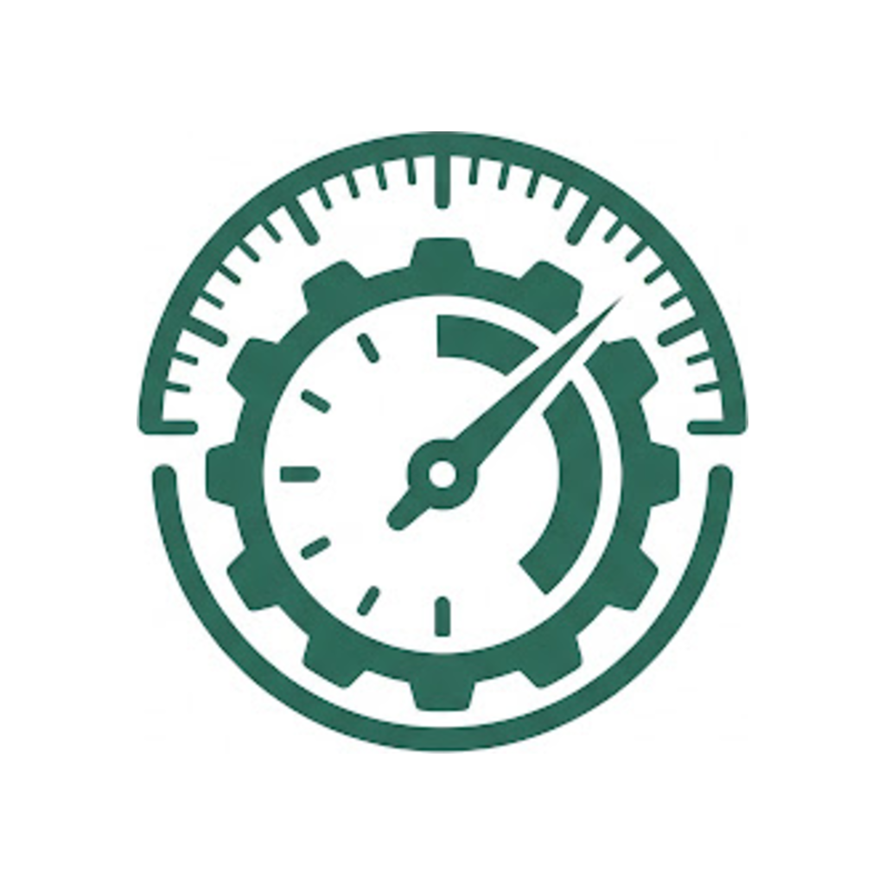
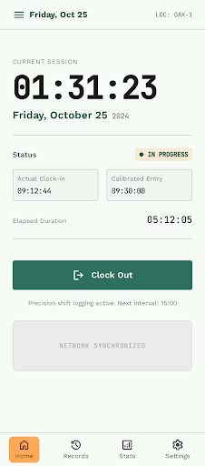
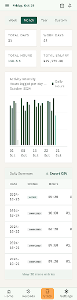

Editor
Jumper™
In JetBrains IDEs, send the current file to any editor you use. One right-click takes you to Cursor, VS Code, TRAE, Codex, or your own tool.
View on JetBrains Marketplace ↗OPEN SOURCE
1.0.2
1.0.2
Tools should make focus easier
wwwVolley creates digital products for real workflows: less friction, more control, and more time for the work itself.

SELECTED WORKS
From code editing to daily time tracking, good tools should stay out of the way and make the next step feel natural.
In JetBrains IDEs, send the current file to any editor you use. One right-click takes you to Cursor, VS Code, TRAE, Codex, or your own tool.
View on JetBrains Marketplace ↗A personal work-hours tracker for HarmonyOS. Calibrate schedules automatically and see weekly, monthly, and yearly hours and income clearly.
Get it on AppGallery ↗

A native macOS text and code editor for focused work, with tabs, Finder associations, syntax highlighting, separate windows, and local draft recovery.
View LimeCode ↗THE PRINCIPLE
Every entry point is considered, leaving only what helps you finish the work.
Tools should adapt to your workflow, not ask you to change your habits.
Small and dependable, continuously refined so today's version holds up tomorrow.
KEEP IN TOUCH